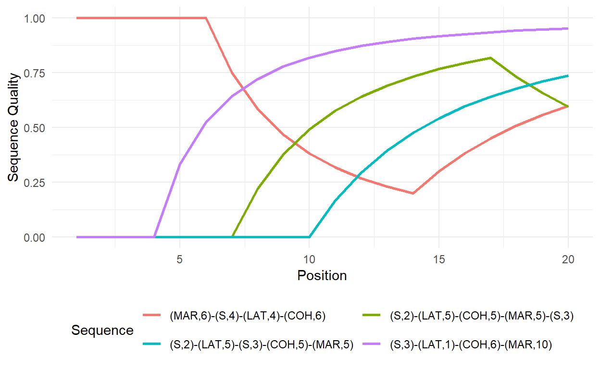

Chapter 2.5 Advanced Description
readme.html and run 2-0_ChapterSetup.R. This will create 2-0_ChapterSetup.RData in the sub folder data/R. This file contains the data required to re-produce some of the results shown below.LoadInstallPackages.R# assuming you are working within .Rproj environment
library(here)
# install (if necessary) and load other required packages
source(here("source", "load_libraries.R"))
# load environment generated in "2-0_ChapterSetup.R"
load(here("data", "R", "2-0_ChapterSetup.RData"))The chapter starts with two tiny sequences that were constructed to illustrate differences between counting the number of transitions and the number of subsequences. The sequence data are constructed with the following code:
seqX <- c("S","LAT","COH","MAR")
seqY <- c("S","LAT","COH","S")
ex1.seq <- seqdef(rbind(seqX,seqY), alphabet = seqX)The number of transitions can be obtained with the seqtransn function, the number of distinct subsequences is computed with seqsubsn. Both functions are part of the {TraMineR} package.
# Number of transitions
seqtransn(ex1.seq) Trans.
seqX 3
seqY 3# Number of subsequences
seqsubsn(ex1.seq) Subseq.
seqX 16
seqY 15In Table 2.9 we show all distinct subsequences extracted from Sequence x (seqX) & Sequence y (seqY). The subsequences can be extracted by using the combn function. The function extracts only subsequences of a given length each time it is executed. In the following loop we specify rev(seq_along(seqX)) to extract subsequences of length 4 to 1. The extracted subsequences are stored as data.frames in the resulting list subseqs. In the next step, we put all these subsequences into one data frame using bind_rows(subseqs). Then we remove all duplicates using distinct and add an empty row for the empty subsequence \(\lambda\). The resulting dataset can be nicely printed in the console with print(seqdef(subseqs), format = "SPS").
# Extract & display all possible subsequences of Sequence x
subseqsX <- vector(mode = "list", length = length(seqX))
for (i in rev(seq_along(seqX))) {
subseqsX[[i]] <- as.data.frame(t(combn(seqX, i)))
}
subseqsX <- bind_rows(subseqsX)
subseqsX <- add_row(subseqsX, .before = 1) # add empty sequence lambda
subseqsX <- distinct(subseqsX)
subseqsX <- print(seqdef(subseqsX), format = "SPS") Sequence
1
2 (S,1)
3 (LAT,1)
4 (COH,1)
5 (MAR,1)
6 (S,1)-(LAT,1)
7 (S,1)-(COH,1)
8 (S,1)-(MAR,1)
9 (LAT,1)-(COH,1)
10 (LAT,1)-(MAR,1)
11 (COH,1)-(MAR,1)
12 (S,1)-(LAT,1)-(COH,1)
13 (S,1)-(LAT,1)-(MAR,1)
14 (S,1)-(COH,1)-(MAR,1)
15 (LAT,1)-(COH,1)-(MAR,1)
16 (S,1)-(LAT,1)-(COH,1)-(MAR,1)# add "labels" for kable
subseqsX[1,1] <- "$\\lambda$"
colnames(subseqsX) <- "Sequence x"# Extract & display all possible subsequences of Sequence y
subseqsY <- vector(mode = "list", length = length(seqY))
for (i in rev(seq_along(seqY))) {
subseqsY[[i]] <- as.data.frame(t(combn(seqY, i)))
}
subseqsY <- bind_rows(subseqsY)
subseqsY <- add_row(subseqsY, .before = 1) # add empty sequence lambda
subseqsY <- distinct(subseqsY)
subseqsY <- print(seqdef(subseqsY), format = "SPS") Sequence
1
2 (S,1)
3 (LAT,1)
4 (COH,1)
5 (S,1)-(LAT,1)
6 (S,1)-(COH,1)
7 (S,2)
8 (LAT,1)-(COH,1)
9 (LAT,1)-(S,1)
10 (COH,1)-(S,1)
11 (S,1)-(LAT,1)-(COH,1)
12 (S,1)-(LAT,1)-(S,1)
13 (S,1)-(COH,1)-(S,1)
14 (LAT,1)-(COH,1)-(S,1)
15 (S,1)-(LAT,1)-(COH,1)-(S,1)# add "labels" for kable
subseqsY[1,1] <- "$\\lambda$"
colnames(subseqsY) <- "Sequence y"Now we are ready to print the extracted subsequences in a nice table. Note that we also included the empty sequence \(\lambda\) by adding an additional entry with add_row for subseqsX & subseqsY.
# Table: Subsequences of Sequences x & y
kable(list(subseqsX,subseqsY)) %>%
kable_styling(bootstrap_options =
c("responsive", "hover", "condensed"),
full_width = F)
|
|
Normalizing the two sequencing indicators eases the comparison between sequences. The number of transitions can be normalized by adding the argument norm = TRUE when executing seqtransn. The normalization of the number of subsequences is done manually. Following ELzinga`s recommendation we use the \(\log_2\phi\) instead of total number of subsequences (\(\phi\)) as our starting point. This number is related to it’s theroetical maximum \(\log_2\phi_{max}\). The maximum number of subsequences can be extracted from a hypothetical sequence that repeats the states of the alphabet up to the length of thelongest sequence in the currently examined data. In our example this sequence is constructed by:
seqsubsn.max <- rep(alphabet(ex1.seq),
length.out = max(seqlength(ex1.seq)))
seqsubsn.max[1] "S" "LAT" "COH" "MAR"The resulting sequence is identical with sequence x. Accordingly, the normalized value for this sequence should equal 1. The following two commands produce the normalized scores for our two sequence. The first command defines the object extracted in the previous step as a sequence object (seqdef(t(seqsubsn.max))) and extracts the number of subsequences with seqsubsn. The second command computes the normalized values for our two example sequences according to \(\frac{log_2 \phi - 1}{\log_2\phi_{max} - 1}\).
# normalized number of transitions
seqtransn(ex1.seq, norm = TRUE) Trans.
seqX 1
seqY 1# normalized number of subsequences (log2)
seqsubsn.max <- seqsubsn(seqdef(t(seqsubsn.max)))
round((log2(seqsubsn(ex1.seq))-1)/
(log2(rep(seqsubsn.max,nrow(ex1.seq)))-1),2) Subseq.
seqX 1.00
seqY 0.97The example sequences from the book can be created with the following code:
seqX2 <- rep(c("S","LAT","COH","MAR"),2)
seqY2 <- rep(c("S","LAT","COH","MAR"),c(2,2,2,2))
ex2.seq <- seqdef(rbind(seqX2,seqY2),
alphabet = c("S","LAT","COH","MAR"))The normalized longitudinal entropies are computed with:
seqient(ex2.seq) Entropy
seqX2 1
seqY2 1Both sequences have an entropy values of 1, the maximum. They differ, however, in terms of sequencing:
# normalized number of transitions
seqtransn(ex2.seq, norm = TRUE) Trans.
seqX2 1.0000000
seqY2 0.4285714# normalized number of subsequences (log2)
seqsubsn.max <- rep(alphabet(ex2.seq),
length.out = max(seqlength(ex2.seq)))
seqsubsn.max <- seqsubsn(seqdef(t(seqsubsn.max)))
round((log2(seqsubsn(ex2.seq))-1)/
(log2(rep(seqsubsn.max,nrow(ex2.seq)))-1),2) Subseq.
seqX2 1.00
seqY2 0.44For this section we generate an example dataset comprising 12 sequences of length 20:
# Construct set of example sequences
data <- matrix(c(rep("S", 20),
rep("MAR", 20),
c(rep("MAR", 5)), rep("COH", 5), rep("LAT", 5), rep("S", 5),
c(rep("S", 5), rep("LAT", 5), rep("COH", 5), rep("MAR", 5)),
c(rep("S", 3), rep("LAT", 1), rep("COH", 6), rep("MAR", 10)),
c(rep("S", 4), rep("LAT", 4), rep("COH", 6), rep("MAR", 6)),
c(rep("MAR", 6), rep("S", 4), rep("LAT", 4), rep("COH", 6)),
c(rep("S", 10), rep("MAR", 10)),
c(rep("S", 2), rep("LAT", 5), rep("S", 3), rep("COH", 5), rep("MAR", 5)),
c(rep("S", 2), rep("LAT", 5), rep("COH", 5), rep("MAR", 5), rep("S", 3)),
c(rep("S", 2), rep("MAR", 10), rep("COH", 8)),
c(rep("S", 2), rep("MAR", 2), rep("COH", 8), rep("MAR", 8))),
nrow = 12, byrow = TRUE)
example.seq <- seqdef(data, alphabet = c("S","LAT","COH","MAR"))
example.sps <- print(example.seq, format = "SPS") Sequence
1 (S,20)
2 (MAR,20)
3 (MAR,5)-(COH,5)-(LAT,5)-(S,5)
4 (S,5)-(LAT,5)-(COH,5)-(MAR,5)
5 (S,3)-(LAT,1)-(COH,6)-(MAR,10)
6 (S,4)-(LAT,4)-(COH,6)-(MAR,6)
7 (MAR,6)-(S,4)-(LAT,4)-(COH,6)
8 (S,10)-(MAR,10)
9 (S,2)-(LAT,5)-(S,3)-(COH,5)-(MAR,5)
10 (S,2)-(LAT,5)-(COH,5)-(MAR,5)-(S,3)
11 (S,2)-(MAR,10)-(COH,8)
12 (S,2)-(MAR,2)-(COH,8)-(MAR,8) Table 2-10 in the book presents several unidimensional and composite measures for these sequences. Two of the more recent indices require to specify some sort of qualitative hierarchy of states. Whereas the the quality index proposed by Manzoni and Mooi-Reci (2018) only allows for dichotomous differentiation (success vs failure) the precarity index suggested by Ritschard et al. (2018) allows for a more nuanced differentiation. For the purpose of this example we take a traditionalist’s perspective and impose the folowing hierarchy of partnership states \(\text{MAR} > \text{COH} > \text{LAT} > \text{S}\), i.e. the elements of the alphabet in reversed order. Accordingly, we specify the state.order argument of the seqprecarity function as rev(alphabet(example.seq)). For the quality index we only consider the state of marriage as a success.
# Number of transitions
transitions <- seqtransn(example.seq)
transitions.norm <- round(seqtransn(example.seq, norm = TRUE),2)
# Within sequence entropies
entropy <- seqient(example.seq)
# Turbulence
turbulence <- seqST(example.seq, norm = TRUE)
# Complexity
complexity <- seqici(example.seq)
#Precarity index
precarity <- seqprecarity(example.seq,
state.order = rev(alphabet(example.seq)))
# Sequence quality index
# considering only Marriage as a success
quality <- seqindic(example.seq, indic=c("integr"),
ipos.args=list(pos.states=c("MAR")),
w = 1)
colnames(quality) <- "Quality" # Variable label for kable
# Print all indices in a joint table (Table 2.10)
tab2.10 <- data.frame(example.sps,
Transitions = as.vector(transitions.norm),
entropy,
turbulence,
Complexity = as.vector(complexity),
Precarity = as.vector(precarity),
quality)
kable(tab2.10, digits = 2) %>%
kable_styling(bootstrap_options =
c("responsive", "hover", "condensed"),
full_width = F)| Sequence | Transitions | Entropy | Turbulence | Complexity | Precarity | Quality |
|---|---|---|---|---|---|---|
| (S,20) | 0.00 | 0.00 | 0.00 | 0.00 | 0.20 | 0.00 |
| (MAR,20) | 0.00 | 0.00 | 0.00 | 0.00 | 0.00 | 1.00 |
| (MAR,5)-(COH,5)-(LAT,5)-(S,5) | 0.16 | 1.00 | 0.47 | 0.40 | 0.73 | 0.07 |
| (S,5)-(LAT,5)-(COH,5)-(MAR,5) | 0.16 | 1.00 | 0.47 | 0.40 | 0.20 | 0.43 |
| (S,3)-(LAT,1)-(COH,6)-(MAR,10) | 0.16 | 0.82 | 0.27 | 0.36 | 0.20 | 0.74 |
| (S,4)-(LAT,4)-(COH,6)-(MAR,6) | 0.16 | 0.99 | 0.42 | 0.39 | 0.20 | 0.50 |
| (MAR,6)-(S,4)-(LAT,4)-(COH,6) | 0.16 | 0.99 | 0.42 | 0.39 | 0.29 | 0.10 |
| (S,10)-(MAR,10) | 0.05 | 0.50 | 0.40 | 0.16 | 0.20 | 0.74 |
| (S,2)-(LAT,5)-(S,3)-(COH,5)-(MAR,5) | 0.21 | 1.00 | 0.42 | 0.46 | 0.42 | 0.43 |
| (S,2)-(LAT,5)-(COH,5)-(MAR,5)-(S,3) | 0.21 | 1.00 | 0.43 | 0.46 | 0.50 | 0.36 |
| (S,2)-(MAR,10)-(COH,8) | 0.11 | 0.68 | 0.24 | 0.27 | 0.35 | 0.36 |
| (S,2)-(MAR,2)-(COH,8)-(MAR,8) | 0.16 | 0.68 | 0.28 | 0.33 | 0.35 | 0.66 |
We wrote a function (seqquality) to implement the sequence quality index proposed by Manzoni and Mooi-Reci (2018) before it was implemented in {TraMineR}. Other than {TraMineR}’s seqici function allows to obtain the quality index for multiple weighting factors simultaneously or for a time-varying computation of the index (as demonstrated in Manzoni and Mooi-Reci (2018)). In addition seqquality also allows to compute a generalized version of the quality index (see below.
We wrapped the seqquality function in a small R package which can be downloaded via Github:
install.packages("devtools")
library(devtools)
install_github("maraab23/seqquality")
library(seqquality)Storing the function in a package allows to complement it with some documentation material. You can access the documentation by typing
?seqqualityIn the example code below we specify marriage as the state of success using three different weights (.5,1,2). As marriage is the fourth state of our alphabet (alphabet(example.seq)) we have to specify stqual = c(0,0,0,1).
seqquality(example.seq,
stqual = c(0,0,0,1),
weight = c(.5,1,2))# A tibble: 12 x 3
`w=0.5` `w=1` `w=2`
<dbl> <dbl> <dbl>
1 0 0 0
2 1 1 1
3 0.136 0.071 0.019
4 0.344 0.429 0.568
5 0.636 0.738 0.866
6 0.407 0.5 0.646
7 0.176 0.1 0.032
8 0.636 0.738 0.866
9 0.344 0.429 0.568
10 0.314 0.357 0.395
11 0.435 0.357 0.225
12 0.586 0.662 0.782The time-varying version of the quality index for each sequence position \(i\) can be computed by the argument time.varying = TRUE. The resulting variable could be used for estimating panel regressions (see Manzoni and Mooi-Reci (2018) for an application). In addition to showcasing the time.varying option the following code also demonstrates that multiple states of the alphabet can be jointly defined as success either by providing their numeric values. In the example below, we specify cohabitation and marriage as success.
seqquality(example.seq,
stqual = c(0,0,1,1),
time.varying = TRUE)Reshaping the data to long format and some data cleaning allow to visualize how the sequences develop over time. In the example below this is done for a selection of four sequences.
# Preparing the data for ggplot (-> long format)
fig.data <- success.tvar %>%
mutate(id = row_number(),
Sequence = example.sps) %>%
select(-weight) %>%
pivot_longer(cols =-c("id", "Sequence"),
names_to = "Position",
values_to = "Sequence Quality") %>%
mutate(Position = as.numeric(substring(Position, first = 3)))
# Plot the development of the sequence quality index
fig.data %>%
filter(id %in% c(5,7,9,10)) %>%
ggplot(aes(x = Position,
y = `Sequence Quality`,
color = Sequence)) +
geom_line(size=1) +
theme_minimal() +
theme(legend.position="bottom") +
guides(col=guide_legend(nrow=2,byrow=TRUE)) 
We also illustrate how the indices could be used in regression analysis. Note that the aim of this exercise is not to build a good statistical model but to showcase how to work with the index scores obtained in SA.
In the following code we generate a dataset containing the respondent’S gender (sex), level of education (highschool), and migration background (migstatus) using the pairfam example data rather than constructed sequences. The data are stored in family and the sequences combining partnership states and fertility have been saved in the sequence object partner.child.year.seq.
regdata <- family %>%
select(sex, highschool, migstatus) %>%
mutate(Complexity = as.numeric(seqici(partner.child.year.seq)),
Turbulence = as.numeric(seqST(partner.child.year.seq, norm = TRUE))) %>%
filter(migstatus != -7) %>% # Exclude missings
mutate(migstatus = as_factor(migstatus))
# Regression analysis with Turbulence and Complexity as DV
lm.turbulence <- lm(Turbulence ~ sex + highschool + migstatus, data = regdata)
lm.complexity <- lm(Complexity ~ sex + highschool + migstatus, data = regdata)
tab_model(lm.turbulence,lm.complexity,
show.ci = FALSE,
pred.labels = c("Intercept", "Gender: female",
"Education: at least high school",
"Migration background: 1st generation",
"2nd generation"),
p.style="stars")| Turbulence | Complexity | |
|---|---|---|
| Predictors | Estimates | Estimates |
| Intercept | 0.29 *** | 0.32 *** |
| Gender: female | -0.01 ** | -0.01 |
| Education: at least high school | 0.04 *** | 0.04 *** |
| Migration background: 1st generation | -0.04 *** | -0.04 *** |
| 2nd generation | 0.01 | 0.01 |
| Observations | 1809 | 1809 |
| R2 / R2 adjusted | 0.062 / 0.060 | 0.046 / 0.044 |
|
||
Finally, the chapter mentions the correlation between turbulence and complexity for the small example data as well as for the pairfam sample. The two correlations can be obtained by
# Correlation in the toy dataset with 12 sequences
cor(complexity,turbulence) Turbulence
C 0.8661277# Computing the indices for the pairfam data
complexity2 <- seqici(partner.year.seq)
turbulence2 <- seqST(partner.year.seq, norm = TRUE)
# Print the correlation
cor(complexity2,turbulence2) Turbulence
C 0.894251The original sequence quality index proposed Manzoni & Mooi-Reci (2018) presented above is constructed using a binary framework that distinguishes only between success and failure. Drawing from the conceptualization of the precarity index, we suggest a generalized version of the sequence quality index that allows for a more nuanced quality hierarchy of states:
\[
\frac{\sum_{i=1}^{k}{q_{i}*p^{w}_{i}}}{\sum_{i=1}^{k}{q_{max}*i^{w }_{i}}}, \quad \text{with} \quad p_i =
\begin{cases}
i & \text{if } x_i=S \\
0 & \text{otherwise}
\end{cases}
\] where \(i\) indicates the position within the sequence, \(x_i=S\) denotes a successful state at position \(i\), and \(w\) is a weighting factor simultaneously affecting the impact size of failures, but also the strength and pace of recovery due to subsequent successes. Different from Manzoni & Mooi-Reci (2018) the generalized version adds an additional weighting factor \(q_{i}\) denoting the quality of a state at position \(i\). The function normalizes the quality factor (stqual) to have values between 0 and 1. Therefore, \(q_{max}=1\). If no quality vector is specified (stqual= NULL), the first state of the alphabet is coded 0, whereas the last state is coded 1. For the states in-between each step up the hierarchy increases the value of the vector by \(1/(l(A) - 1)\), with \(l(A)\) indicating the length of the alphabet.
For illustrative purposes, we again take a traditionalist’s perspective and impose the following rank order: \(S < LAT < COH < MAR\). This translates to a quality vector \(q=(0,\frac{1}{3},\frac{2}{3},1)\) for the four states of our alphabet. In the following table we compare the values of the generalized sequence quality index with the binary sequence quality index (in which only MAR is considered as success).
original <- seqquality(ex1.seq, stqual = c(0,0,0,1))
generalized <- seqquality(ex1.seq) | Sequence | Original | Generalized |
|---|---|---|
| (S,5) | 0.00 | 0.00 |
| (S,2)-(COH,2)-(MAR,1) | 0.33 | 0.64 |
| (S,1)-(LAT,1)-(COH,1)-(MAR,2) | 0.60 | 0.78 |
| (S,2)-(LAT,1)-(MAR,1)-(LAT,1) | 0.27 | 0.44 |
| (S,1)-(COH,1)-(MAR,1)-(S,1)-(COH,1) | 0.20 | 0.51 |
| (S,1)-(COH,1)-(MAR,1)-(S,2) | 0.20 | 0.29 |
The generalized index allows to obtain more fine-grained results than the original quality index, but requires more analytical choices, i.e. the definition of a state hierarchy which assigns metric weights to each state. The function for the generalized sequence quality index requires further testing and should be considered work in progress.
If you see mistakes or want to suggest changes, please create an issue on the source repository.
Text and figures are licensed under Creative Commons Attribution CC BY-NC 4.0. Source code is available at https://github.com/sa-book/sa-book.github.io, unless otherwise noted. The figures that have been reused from other sources don't fall under this license and can be recognized by a note in their caption: "Figure from ...".